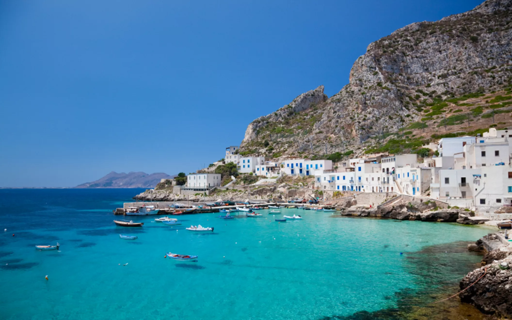

15 anos
29/04/2011

Holambra: é conhecido como as cidade das flores do brasil. Amei muito conhecer, além de ser lindo, os campos de flores de lá são incriveis. lugar

Paraty: é uma pequena cidade de praia no Rio de Janeiro. A cidade é linda, pois toda a sua estrutura é do período brasil colonia. lugar

Maragogi: É conhecido como o caribe brasileiro, fui para lá no ano passado, e amei conhecer. lugar
Inglaterra: sempre tive vontade de visitar, muito por conta dos livros que eu leio e pelos filmes que eu gosto. lugar

Sicilia: é uma cidade na Italia que sempre tive vontade de conhecer. Sempre que penso em um lugar me vem esse na cabeça. lugar